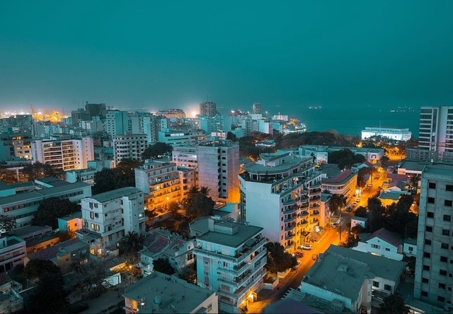

Galerie des Spécialités Touristiques
Découvrez les spécialités de chaque site touristique à travers cette galerie.

Dakar - capitale Sénégalaise
Le Thiéboudienne, plat national sénégalais, est une spécialité incontournable.

Saly - Plages Paradisiaques
Les plages de Saly offrent des paysages à couper le souffle et des activités nautiques.

Saint-Louis - Patrimoine Historique
Plongez dans l’histoire avec l’architecture coloniale et les monuments emblématiques.

Îles - Beauté Naturelle
Découvrez la beauté naturelle des îles du Sénégal avec leurs plages et paysages uniques.

Parcs - Faune et Flore
Explorez la faune et la flore des parcs nationaux du Sénégal, un véritable paradis pour les amoureux de la nature.